Kitaplık
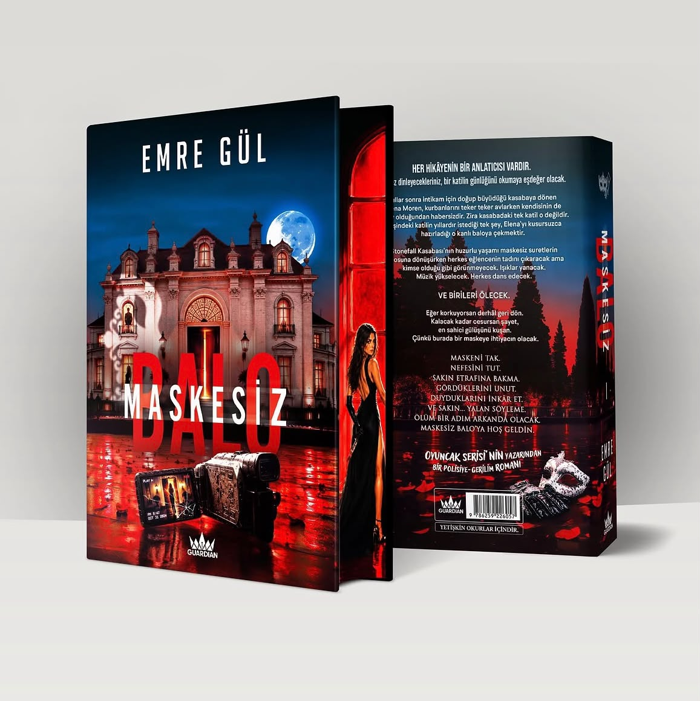
Maskesiz Balo
"Işıklar yanacak, müzik yükselecek, herkes dans edecek ama günün sonunda birileri mutlaka ölecek."
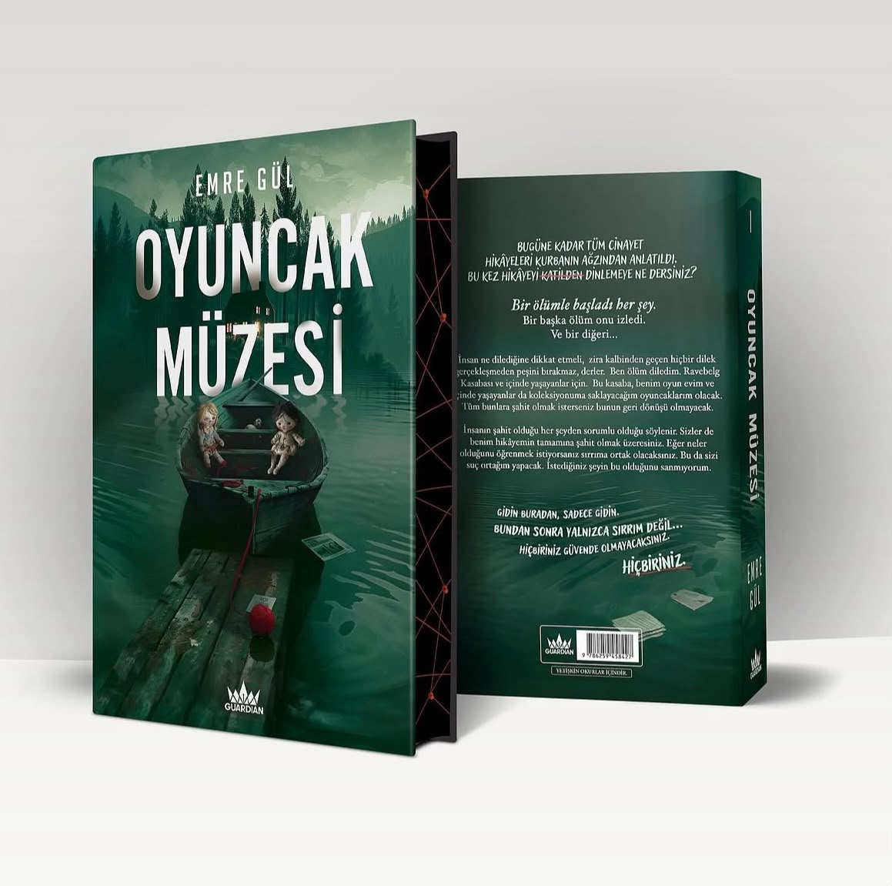
Oyuncak Müzesi
"Her cinayetin bir kurbanı, her katilin ise sergilemekten gurur duyduğu kusursuz bir oyuncağı vardır."
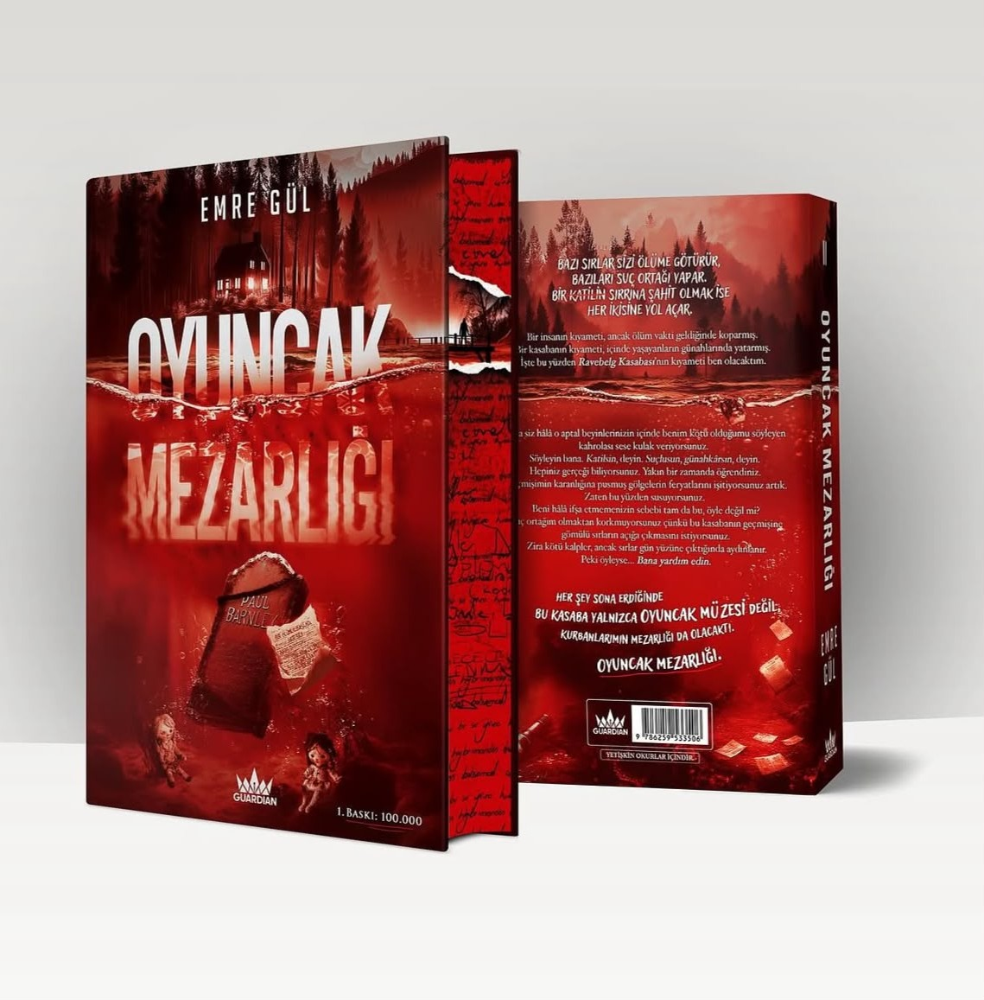
Oyuncak Mezarlığı
"Bazı sırlar sizi ölüme götürür, bazıları suç ortağı yapar; bir katilin sırrına şahit olmak ise her ikisine yol açar."
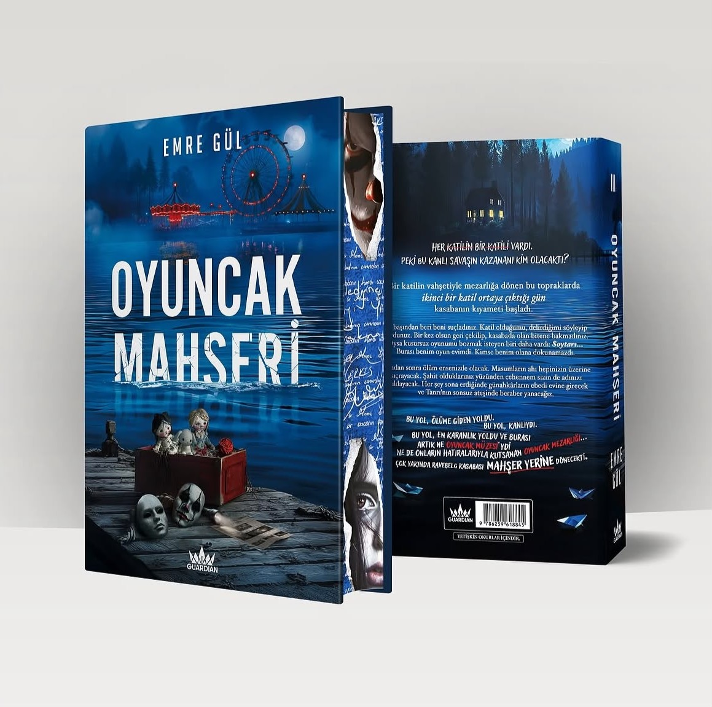
Oyuncak Mahşeri
"Her katilin bir katili vardı; peki bu kanlı kıyametin sonunda kazanan kim olacaktı?"
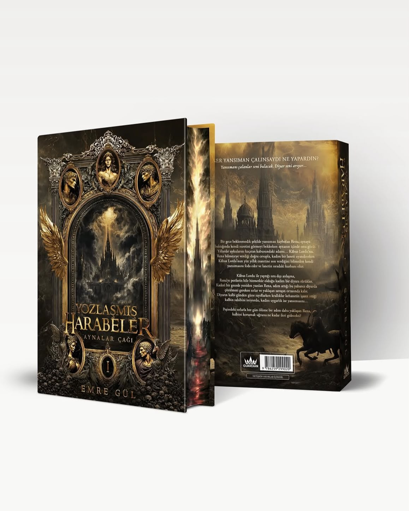
Yozlaşmış Harabeler 1
"Eğer bir gece ansızın aynadaki yansıman çalınsaydı, ruhunu geri almak için bir kâbus lorduyla ne kadar ileri giderdin?"
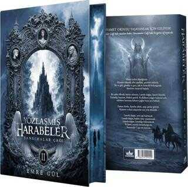
Yozlaşmış Harabeler 2
"Aynalar Çağı'nda yazılan kader, Yansımalar Çağı'nda bozguna uğrayacak ve lanet onunla bütünleştiğinde bu çağ son bulacak."
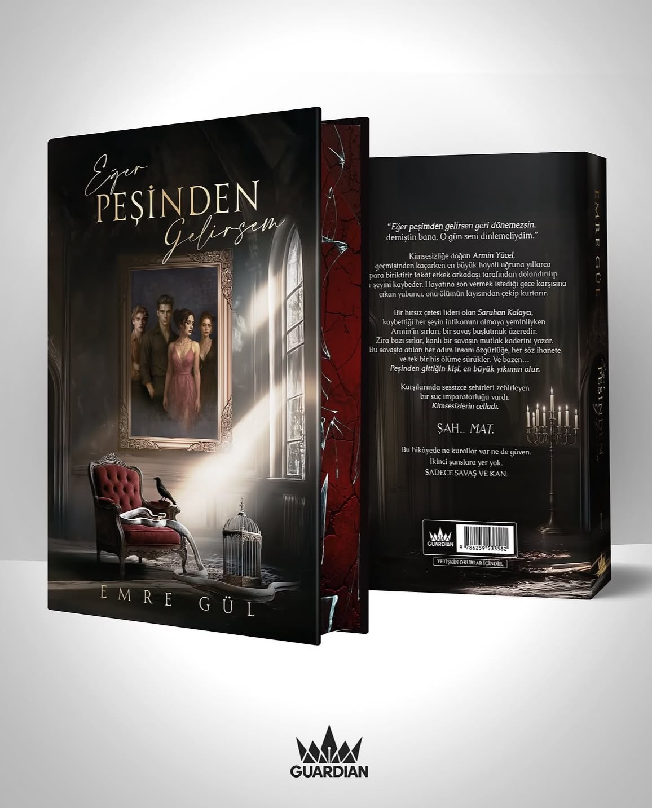
Eğer Peşinden Gelirsem 1
"Eğer peşimden gelirsen geri dönemezsin demiştin bana; o gün seni dinlemeliydim."
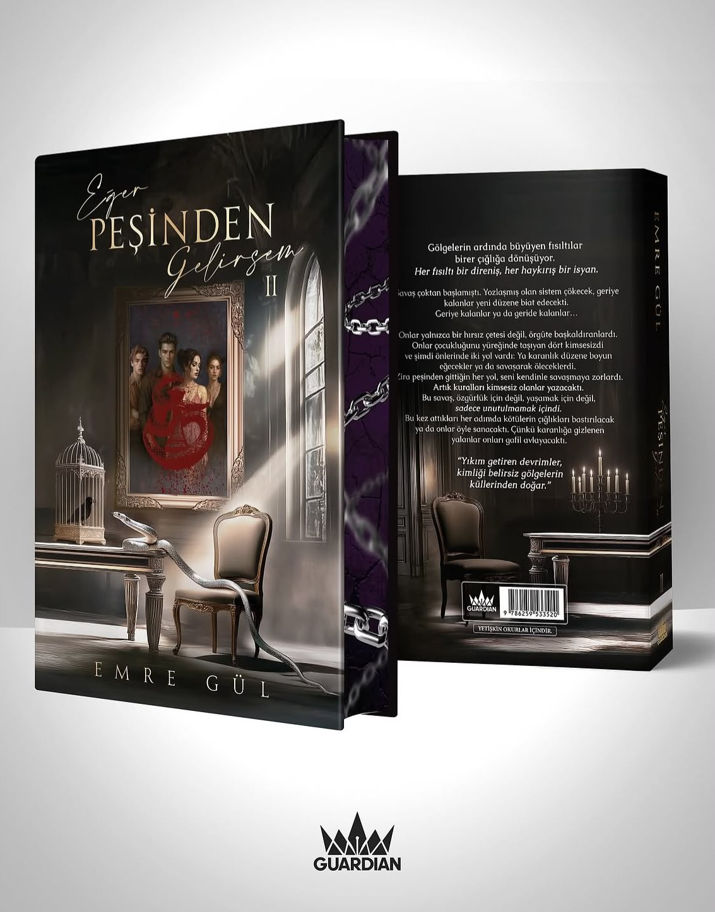
Eğer Peşinden Gelirsem 2
"Bu savaş; özgürlük için değil, yaşamak için değil, sadece unutulmamak içindi."
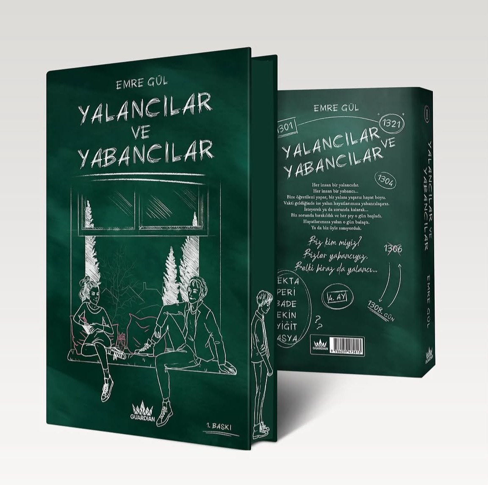
Yalancılar ve Yabancılar 1
"Bir yabancı asla incitemez seni; kalp her daim sevdiğin insanlar tarafından kırılmaya mahkumdur."
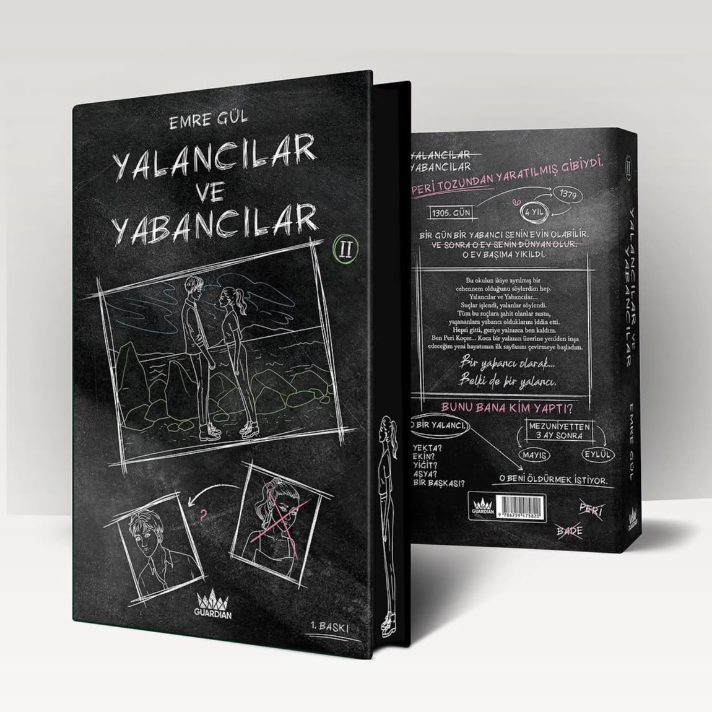
Yalancılar ve Yabancılar 2
"Bir yalanın üzerine inşa ettiğimiz o görkemli saray başımıza yıkılırken, her birimiz kendi harabelerimizde can çekişen yabancılardık."
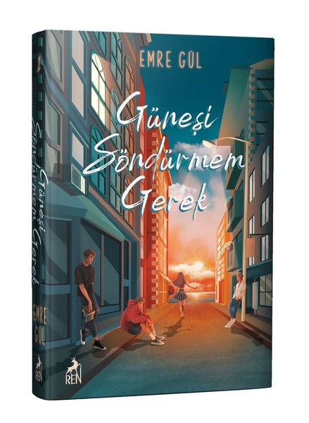
Güneşi Söndürmem Gerek 1
"Işığa ihtiyaç duyduğun her gün için bir yıldız karala gökyüzüne."
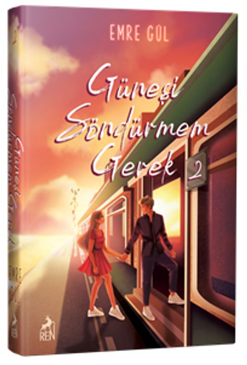
Güneşi Söndürmem Gerek 2
"Kalbimdeki o derin karanlığı bir tek senin ışığının silebileceğini anladığım an, güneşi söndürmekten tamamen vazgeçtim."
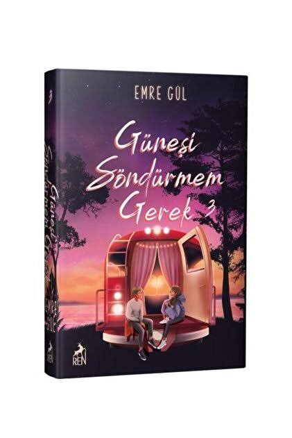
Güneşi Söndürmem Gerek 3
"Geçmişin küllerini savurduk ve o küllerden, bir daha hiç sönmeyecek yepyeni bir gökyüzü inşa ettik."
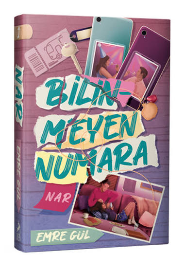
Nar
"Biz, saatlerce bir yıldızın kaymasını bekleyip o kaydıktan sonra tutmuştuk dileğimizi; çünkü o yıldız gökyüzüne ihanet etmişti."
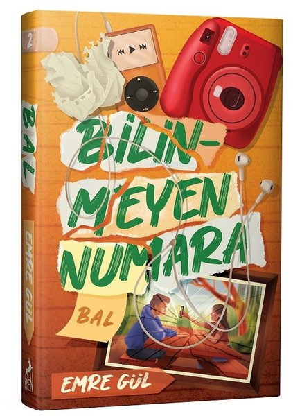
Bal
"Sen benim tatlı bir telaşım, içimi eriten en güzel sığınağım; sen benim hayatımı güzelleştiren Bal'ımsın."
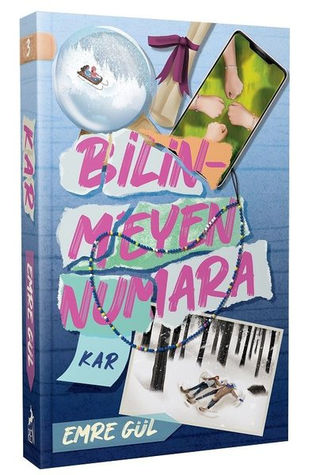
Kar
"Üzerimize yağan her hüzün tıpkı bir kar tanesi gibiydi; soğuktu, canımızı yaktı ama sonunda tüm kirli geçmişi bembeyaz bir örtüyle kapattı."